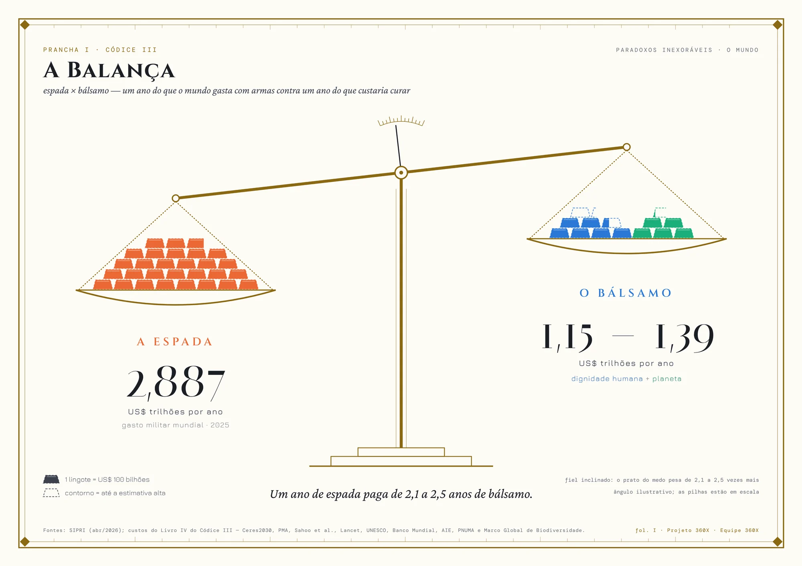
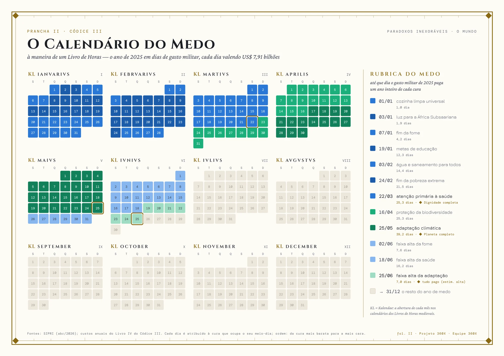
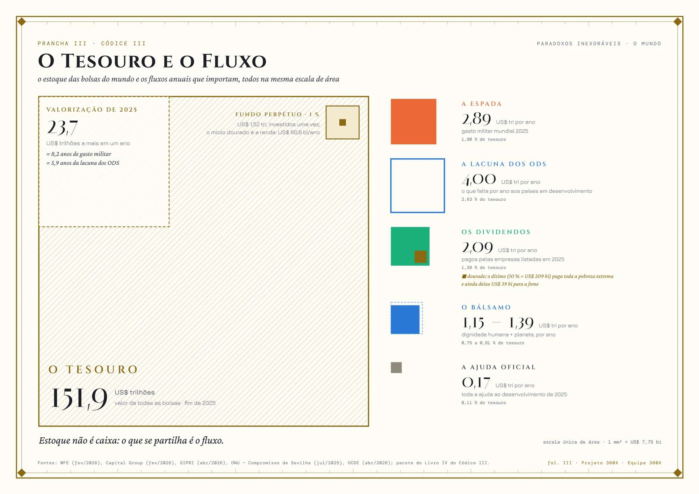

Dízimo da Paz
10 % do gasto militar = US$ 288,7 bi/ano. Paga fome, educação, água, luz e cozinha limpa: de 92 % a 113 % da verba.
● cabe quase inteiroEm 2025, o mundo gastou US$ 2,887 trilhões com forças armadas. Um ano disso pagaria mais de dois anos de um pacote global de dignidade humana e de cuidado com o planeta. E, ainda assim, o dinheiro não é o maior obstáculo.
Ações são estoque, não caixa: se todos vendessem ao mesmo tempo, o preço desabaria antes de o dinheiro aparecer. O que se pode partilhar é o fluxo — dividendos, impostos sobre ganhos e investimento novo.
gasto militar mundial em 2025 · 2,5 % do PIB · 11º ano seguido de alta (SIPRI).
valor de todas as bolsas no fim de 2025 (WFE); o SIFMA chega a US$ 157,8 tri. Estoque, não caixa.
dividendos pagos em 2025 (Capital Group): mais que o gasto militar do mundo inteiro sem os EUA.
lacuna anual dos Objetivos de Desenvolvimento Sustentável (ONU, Compromisso de Sevilha).
Régua: 1 dia de gasto militar mundial = US$ 7,91 bi. A fome custa de 4 a 12 dias por ano, conforme a estimativa (Ceres2030 ou Programa Mundial de Alimentos); água e saneamento para todos, 14 dias.
Nenhum exige desarmar o mundo nem vender as bolsas. Hipóteses ilustrativas, não propostas fechadas.
10 % do gasto militar = US$ 288,7 bi/ano. Paga fome, educação, água, luz e cozinha limpa: de 92 % a 113 % da verba.
● cabe quase inteiro10 % dos dividendos = US$ 209 bi/ano. Paga toda a pobreza extrema e deixa US$ 39 bi para a fome.
● o tesouro fica intactoOs dois juntos = US$ 497,7 bi/ano. Paga todo o pacote básico menos a saúde, mesmo na estimativa alta da fome.
◆ o cenário-chave1 % das bolsas = US$ 1,52 tri, uma única vez. A 4 % reais, rende US$ 60,8 bi por ano, para sempre.
◆ depende do rendimentoUm ano inteiro de gasto militar pagaria 2,1 a 2,5 anos de dignidade e planeta, ou 72 % da lacuna dos ODS.
▲ o menos realista| Nº | Paradoxo | Em uma frase |
|---|---|---|
| I | Do Medo | Cada país compra segurança; somados, compram insegurança. |
| II | Do Átomo | O mundo gasta com bombas nucleares (US$ 119 bi) o que custaria água e saneamento para todos (US$ 114 bi). |
| III | Da Ajuda | Quando o medo sobe, a ajuda cai: −23,1 % em 2025. |
| IV | Do Estoque | A maior riqueza do mundo só existe enquanto não é vendida. |
| V | Da Escala | A fome custa de 4 a 12 dias de medo — e ainda assim persiste. |
| VI | Da Guerra que Gera Fome | A arma que promete proteger é a maior fábrica de fome. |
| VII | De Dédalo | A pesquisa militar criou a internet e o GPS; a paz ainda não ganhou um orçamento do mesmo tamanho. |
| VIII | Do Emprego | A arma emprega menos que o giz: o ensino básico gera 178 % mais empregos por dólar (EUA). |
| IX | Do Planeta | Pagamos mais para destruir a natureza (US$ 500 bi/ano) do que para protegê-la (US$ 200 bi). |
Gente não se compra em um ano. Médicos, enfermeiros, professores e engenheiros levam anos para se formar. No Brasil, a rede de UTIs perto de casa custaria 7,5 dias de juros da dívida, mas exigiria cerca de 88 % dos intensivistas do país (Códice II).
A guerra bloqueia a ajuda. As duas fomes declaradas de 2025, em Gaza e no Sudão, ocorreram em zonas de guerra.
Sem instituições, o dinheiro evapora. Corrupção, desvio e obras sem manutenção viram ruína. Dissuasão é real: só a redução negociada e verificável de armas é estável.
Os números têm margem. As estimativas vêm de anos, preços e escopos diferentes e se sobrepõem: leia como ordem de grandeza.
Para imprimir em A4 paisagem. Clique para abrir em alta resolução (300 dpi).



Nove livros, tábua de conversões, método e 29 fontes com endereço.
O mesmo conteúdo, com fonte pensada para leitura com dislexia.
A Balança, O Calendário do Medo e O Tesouro e o Fluxo, em escala.
Fontes consultadas até 17/11/2026, na ordem em que aparecem no códice. Encontrou um erro? Abra uma issue.